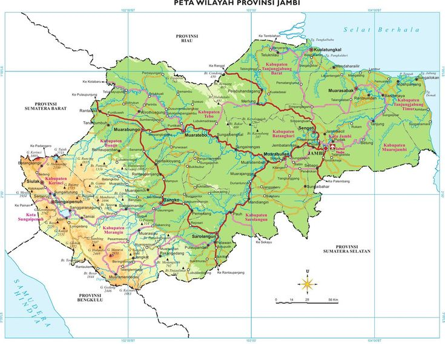

Provinsi Jambi
Negeri Sepucuk Jambi Sembilan Lurah

Mengenal Provinsi Jambi.
Provinsi Jambi merupakan daerah yang kaya akan sejarah, budaya Melayu, dan keindahan alam. Beragam warisan budaya dan tradisi yang masih terjaga hingga saat ini menjadi identitas khas masyarakat Jambi
- Jumlah Penduduk: Sekitar 3,90 juta jiwa.
- Luas Wilayah: 50.160,05 km²
- Ibu Kota: Kota Jambi
- Jumlah Kabupaten / Kota: 9 Kabupaten dan 2 Kota).
- Berdiri pada Tanggal: 06 Januari 1957
- Suku Dominan: Melayu Jambi
- Rumah Adat: Kajang Lako
Provinsi Jambi merupakan salah satu provinsi yang terletak di pesisir timur Pulau Sumatra, Indonesia. Provinsi ini dikenal sebagai daerah yang kaya akan sejarah, budaya, dan sumber daya alam. Jambi memiliki keberagaman adat istiadat Melayu yang masih terjaga hingga saat ini, sehingga menjadi salah satu pusat kebudayaan Melayu di Indonesia. Dengan luas wilayah sekitar 50.160 km² dan ibu kota berada di Kota Jambi, provinsi ini memiliki 9 kabupaten dan 2 kota. Sungai Batanghari yang merupakan sungai terpanjang di Pulau Sumatra mengalir melintasi wilayah Jambi dan memiliki peranan penting dalam kehidupan masyarakat sejak zaman dahulu. Selain terkenal dengan keindahan alamnya, Jambi juga memiliki berbagai warisan sejarah yang bernilai tinggi, seperti Kompleks Candi Muaro Jambi yang merupakan salah satu kawasan percandian Buddha terluas di Asia Tenggara. Kekayaan budaya, seni tradisional, kuliner khas, serta keramahan masyarakat menjadikan Jambi sebagai daerah yang menarik untuk dipelajari dan dikunjungi.
Fakta Menarik Provinsi Jambi
Kekayaan budaya dan sejarah yang menjadi identitas Provinsi Jambi
Tempat Wisata
Bahasa Daerah Utama
Suku di Jambi
Jumlah Cagar Budaya